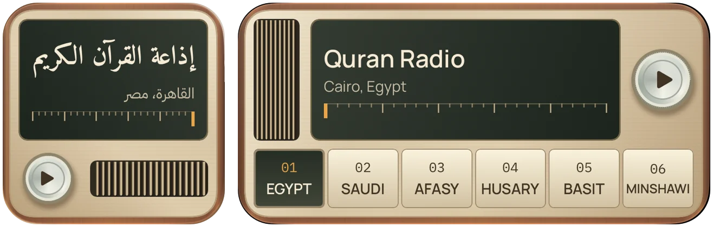

Release notes · Hona Elqahra for iPhone
Hona Elqahra 1.1 brings the radio dial to your Home Screen
If you always come back to Cairo Quran Radio, one button is enough. If you switch between Cairo and a few favorite reciters, the wide widget puts all six stations under your thumb.

I submitted Hona Elqahra 1.1 to Apple for review on 19 November. Here’s how the new controls work.
Give one station a button, or keep all six
In the iPhone widget gallery, look for Hona Elqahra. Choose the small radio and use Edit Widget to pick a station. Tap its round button to play or pause. The wide radio adds six preset keys beneath the green tuning display. Tap a key to switch stations from the Home Screen.
To choose what those keys play, open Stations in the app and tap Edit dial presets. Pick a numbered slot, then choose a station from Favorites or the directory. If Cairo is on 1 and Al-Husary is on 2, those numbers match on both the radio dial and the wide widget.
Let Siri do the tuning
Say “Play a station on Hona Elqahra” to choose what to hear, or “Pause Hona Elqahra” when you’re done. In the Shortcuts app, you can also add Play radio station to a shortcut and choose the station in advance.
Find the reciter and the reading
Looking for Al-Husary reciting in Warsh? In Stations, type Hosary Warsh or الحصري ورش. Both searches find that reading. You can then save it to Favorites or give it a spot on the dial.
To revisit these changes in the app, open About and tap What’s New.
Read how the original radio took shape · View Hona Elqahra on the App Store